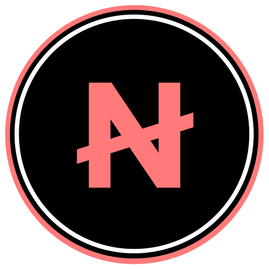

DIRECT CONTRACT ACCESS / JUNO-1
RESCUE NETA.
Preview a direct swap between JUNO and NETA in the existing legacy WYND pool. Quotes are read directly from the on-chain contract.
PUBLIC ACCESSNON-CUSTODIAL SWAPSANY JUNO WALLET VIA KEPLR
LIVE CONTRACT QUOTE
SWAP JUNO / NETA
MAX SLIPPAGEThe quote will fail if execution moves beyond this tolerance.
5% is the default for this low-liquidity legacy pool. Maximum allowed here: 10%.
BALANCE —
JUNO
EST. $0.00
YOU RECEIVEON JUNO

NETAEST. $0.00ENTER AN AMOUNT
- RATE
- —
- PRICE IMPACT
- —
- POOL FEE
- 0.30%
- MINIMUM RECEIVED
- —
- MAX SLIPPAGE
Public swaps are available to any connected Juno wallet and limited to an estimated value of $25 per transaction.